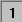

Layer hinzufügen und anordnen
Customize-Add-Arrange-Layer
Zusammenfassung
Ein Diagrammseite umfasst üblicherweise drei Elemente: einen Satz X-, Y- (und Z-) Koordinatenachsen, ein oder mehrere Diagramme und entsprechende Text- bzw. Grafikbeschriftungen. Origin kombiniert diese drei Elemente in einer verschiebbaren, in der Größe veränderlichen Einheit, die als Layer bezeichnet wird. Während eine Seite mehrere Layer enthält (maximal 121), ist nur ein Layer zur gleichen Zeit aktiv.
Was Sie lernen werden
- Bestimmen, wie viele Layer ein Diagramm hat
- Bestimmen, welche Daten sich in welchem Layer befinden
- Layer austauschen
Schritte
Daten importieren
- Klicken Sie auf die Schaltfläche ASCII-Dateidaten
 in der Standardsymbolleiste. Der Dialog ASCII wird geöffnet.
in der Standardsymbolleiste. Der Dialog ASCII wird geöffnet.
- Suchen Sie im Origin-Ordner nach dem Ordner Samples und dann nach dem Diagrammordner Graphing. Wählen Sie Wind.dat aus der Liste der Dateien.
- Klicken Sie auf Öffnen. Die Datendatei wird in das Arbeitsblatt importiert.
Daten zeichnen
- Markieren Sie die Spalten Speed und Power.
- Klicken Sie auf die Schaltfläche Liniendiagramm
 auf der Symbolleiste 2D-Grafiken. Es wird ein Liniendiagramm erzeugt. Offenbar wäre es besser, wenn diese Daten in einem Diagramm mit doppelter Y-Achse gezeichnet würden, einem Diagramm mit zwei steuernden Y-Achsen.
auf der Symbolleiste 2D-Grafiken. Es wird ein Liniendiagramm erzeugt. Offenbar wäre es besser, wenn diese Daten in einem Diagramm mit doppelter Y-Achse gezeichnet würden, einem Diagramm mit zwei steuernden Y-Achsen.
- Klicken Sie auf X, um dieses Fenster zu schließen. Sie werden gefragt, ob das Fenster verborgen oder gelöscht werden soll. Klicken Sie auf die Schaltfläche Verbergen. (Wenn Sie löschen, können Sie diesen Vorgang nicht rückgängig machen und müssen das Diagramm ggf. neu erstellen. Wenn Sie das Fenster verbergen, wird es geschlossen, kann aber später wieder mit Hilfe des Projekt Explorers sichtbar gemacht werden.)
- Die Spalten Speed und Power sollten noch immer markiert sein. Klicken Sie die Schaltfläche Doppelte Y-Achse
 in der Symbolleiste 2D Grafiken an. Dieses neue Diagramm enthält 2 Layer.
in der Symbolleiste 2D Grafiken an. Dieses neue Diagramm enthält 2 Layer.
Welche Daten sind in welchem Layer gezeichnet?
Eine Methode ist die Legende:
- Klicken Sie doppelt auf Graph1 im Fenster des Projekt Explorers. Das Diagramm öffnet sich und wird zum aktiven Unterfenster.
- Wählen Sie Format: Seite und gehen Sie zur Registerkarte Legenden/Titel.
- Stellen Sie den Übersetzungsmodus der Autom. Legende auf Datenbereich ein.
- Klicken Sie auf OK.
Eine zweite Methode ist die Statusleiste:
- Klicken Sie doppelt auf Graph2 im Fenster des Projekt Explorers. Graph2 ist jetzt im Vordergrund und wird das aktive Unterfenster.
- Klicken Sie auf das Symbol von Layer , um Layer 1 zu aktivieren.
- Unten rechts in der Statusleiste von Origin sehen Sie [WIND]WIND!Col(Speed)[1:12].
- Wiederholen Sie den Schritt für Layer 2 und Sie sehen [WIND]WIND!Col(Power)[1:12].
Ein dritte Methode ist das Menü:
- Aktivieren Sie Graph2.
- Klicken Sie mit der rechten Maustaste auf das Symbol von Layer 1. Unten im Kontextmenü können Sie die Diagrammliste sehen. Das Diagramm mit dem Häkchen ist aktiv.
- Klicken Sie mit der rechten Maustaste auf Layer 2, um die Datenliste anzuzeigen, die darin gezeichnet ist.
- Beachten Sie, dass Sie auch das Menü Daten auswählen können, um die Diagrammliste anzuzeigen.
- Eine vierte Methode stellt der Dialog Diagrammeinstellungen dar.
- Bei noch aktivem Graph2 klicken Sie mit der rechten Maustaste auf das Symbol von Layer 1 und wählen Sie Setup Diagramm.
- Erweitern Sie bei geöffnetem Dialog der Diagrammeinstellungen die Diagrammliste, so dass Sie die Daten in Layer 2 sehen können. Der Vorteil hierbei ist, dass Sie die Daten in allen Layern gleichzeitig sehen können.
 |
Um alle drei Bedienfelder im Dialog Diagrammeinstellungen anzuzeigen, erweitern Sie bitte das Bedienfeld Diagrammtyp, indem Sie auf  klicken, und erweitern Sie das Bedienfeld Verfügbare Daten, indem Sie erneut auf klicken. klicken, und erweitern Sie das Bedienfeld Verfügbare Daten, indem Sie erneut auf klicken.
Bitte lesen Sie unter Zeichnen mit Hilfe des Dialogs Diagrammeinstellungen weitere Informationen zu diesem Thema.
|
- Deaktivieren Sie das Kontrollkästchen Zeigen für das Diagramm Speed.
- Klicken Sie auf OK. Dieses Diagramm ist nur verborgen, so dass die Legende es immer noch im Layer anzeigt.
Die letzte Methode nutzt den Dialog Details Zeichnung.
- Klicken Sie doppelt auf eines der Diagramme Linie + Symbol in Graph2.
- Erweitern Sie den Baum, so dass Sie den Inhalt von Layer1 und Layer2 sehen können.
- Deaktivieren Sie die Diagramme Speed und Power.
- Klicken Sie auf OK.